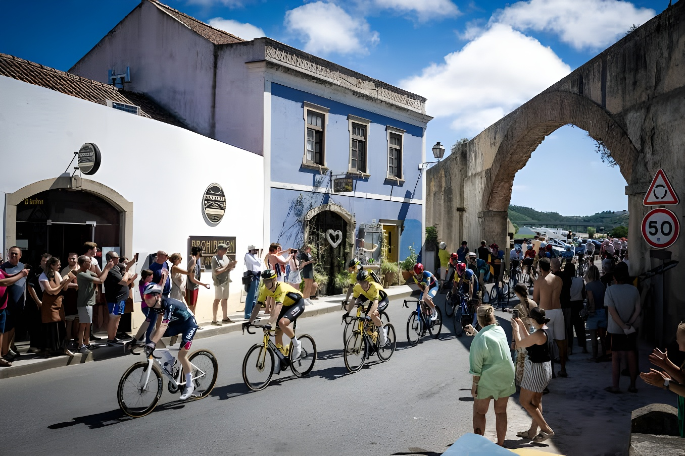

Le 22 août 2026, la 81e édition de la Vuelta a España s'est élancée de Monaco pour la première fois de son histoire, avant de traverser la France et l'Andorre en direction de l'Espagne continentale. Sur 3 275 kilomètres et 21 étapes, ce dernier grand tour de la saison doit s'achever le 13 septembre à Grenade, devant l'Alhambra, plutôt qu'à Madrid comme le veut la tradition. Dès les premières étapes, Tadej Pogačar, fraîchement sacré pour la cinquième fois sur le Tour de France, a pris un net ascendant sur ses rivaux dans sa quête du seul grand tour manquant à son palmarès.
Tout commence le 22 août 2026 à Monaco, où la principauté accueille pour la première fois de son histoire le départ de la Vuelta a España. La 81e édition du Tour d'Espagne s'ouvre par un contre-la-montre individuel de 9,4 kilomètres, tracé entre la place du Casino de Monte-Carlo et le boulevard Albert Ier, empruntant en partie le circuit du Grand Prix de Formule 1. Grâce à ce grand départ, Monaco devient seulement la troisième ville à avoir accueilli la première étape des trois grands tours cyclistes, après le Tour d'Italie en 1966 et le Tour de France en 2009. Au terme d'un chrono disputé à plus de 51 km/h de moyenne, Tadej Pogačar (UAE Team Emirates-XRG) s'impose pour seulement neuf centièmes de seconde devant le Britannique Ethan Hayter, devançant Joshua Tarling de quatre secondes. Cette victoire lui offre son quatrième succès d'étape sur la Vuelta, mais surtout le tout premier maillot rouge de sa carrière, sept ans après sa première participation à la course en 2019.
Les jours suivants confirment l'exigence du tracé. La deuxième étape relie Monaco à Manosque, en France, sur un parcours vallonné, avant qu'un violent orage de grêle sur le col de Mont-Louis ne contraigne les organisateurs à annuler purement et simplement la troisième étape, prévue entre Gruissan et Font-Romeu. Le 25 août, la course retrouve un rythme spectaculaire lors de la quatrième étape, une boucle de 104,8 kilomètres autour d'Andorre-la-Vieille : à 50 kilomètres de l'arrivée, Tadej Pogačar place une attaque solitaire dans la Collada de Beixalis et rallie la ligne avec 2 minutes et 39 secondes d'avance sur ses poursuivants, emmenés par le jeune Belge Jarno Widar. Cette démonstration de force lui permet de conforter son maillot rouge tout en s'emparant également des classements par points, de la montagne et par équipes. Le peloton fait enfin son entrée officielle sur le sol espagnol le 26 août, à l'occasion de la cinquième étape entre Falset et Roquetes.
Étape 1, contre-la-montre à Monaco (9,4 km) : victoire de Tadej Pogačar pour 9 centièmes devant Ethan Hayter ; premier maillot rouge de sa carrière.
Étape 2, Monaco → Manosque (France), 215,5 km, étape vallonnée.
Étape 3, Gruissan → Font-Romeu, annulée en raison d'un violent orage de grêle sur le col de Mont-Louis.
Étape 4, boucle autour d'Andorre-la-Vieille : raid solitaire de Pogačar sur 50 km, victoire avec 2'39 d'avance ; il prend la tête de tous les classements.
Étape 5, Falset → Roquetes : entrée officielle du peloton sur le sol espagnol.
Arrivée finale prévue à Grenade, devant l'Alhambra, une première dans l'histoire de la course.
Cette Vuelta 2026 revêt une signification particulière pour Tadej Pogačar. Moins d'un mois après avoir décroché son cinquième maillot jaune sur le Tour de France, égalant le record de victoires d'Eddy Merckx, Bernard Hinault, Miguel Indurain et Jacques Anquetil, le Slovène s'attaque au seul grand tour qui manque encore à son palmarès : il n'avait terminé que troisième lors de son unique participation, en 2019. Réussir le doublé Tour-Vuelta la même année relèverait de l'exploit historique : seuls Jacques Anquetil, en 1963, et Bernard Hinault, en 1978, y sont parvenus, à une époque où la Vuelta se disputait encore au printemps. Le tenant du titre, le Danois Jonas Vingegaard, vainqueur en 2025, ne prend pas le départ cette année après une chute survenue lors du Tour de France 2026.
« Ce sera l'une des éditions les plus exigeantes de l'histoire. »
— Javier Guillén, directeur de la Vuelta a España, lors de la présentation du parcoursSi le succès final de Tadej Pogačar semble déjà, sauf incident, difficilement contestable, la lutte pour les places d'honneur s'annonce beaucoup plus indécise. Au soir de la quatrième étape, neuf coureurs se tiennent en moins d'une minute derrière le maillot rouge : le Slovène Primož Roglič occupe la deuxième place à 3'21, devant l'Espagnol Enric Mas (+3'32), l'Américain Sepp Kuss (+3'44), le Britannique Oscar Onley (+3'45) et l'Équatorien Richard Carapaz (+3'50). Vingt-trois équipes prennent part à cette 81e édition, parmi lesquelles figure notamment le Portugais João Almeida, coéquipier de Pogačar chez UAE Team Emirates-XRG.
| Étape | Date | Résumé |
|---|---|---|
| 1 | 22 août | CLM à Monaco (9,4 km) — victoire et 1er maillot rouge pour Pogačar |
| 2 | 23 août | Monaco → Manosque — étape vallonnée en France |
| 3 | 24 août | Gruissan → Font-Romeu — étape annulée (orage de grêle) |
| 4 | 25 août | Andorre-la-Vieille — raid solitaire de Pogačar, +2'39 |
| 5 | 26 août | Falset → Roquetes — entrée du peloton en Espagne |
Quatre étapes seulement après le grand départ monégasque, la physionomie de cette Vuelta 2026 semble déjà se dessiner autour de la domination de Tadej Pogačar, auteur de deux succès d'étape et solidement installé en tête de tous les classements. Un sacre final ferait de lui seulement le troisième coureur de l'histoire à réussir le doublé Tour-Vuelta la même saison, après Jacques Anquetil en 1963 et Bernard Hinault en 1978 — et le premier depuis près d'un demi-siècle. Reste que la course, forte de sept arrivées au sommet et de plus de 58 000 mètres de dénivelé encore à parcourir jusqu'à Grenade, conserve largement de quoi rebattre les cartes derrière le maillot rouge. Cette édition marque aussi une rupture symbolique pour l'organisation : après le chaos vécu à Madrid en 2025, où la dernière étape avait dû être neutralisée à 56 kilomètres de l'arrivée en raison de manifestations propalestiniennes ayant rassemblé plus de 100 000 personnes, contraignant Jonas Vingegaard à fêter son sacre sans cérémonie officielle, la Vuelta a choisi de clore son parcours à Grenade, loin de la capitale espagnole. Un symbole fort pour une course qui espère retrouver, jusqu'au bout, la fête populaire qui a longtemps fait sa réputation.
El 22 de agosto de 2026, la 81ª edición de la Vuelta a España partió de Mónaco por primera vez en su historia, antes de atravesar Francia y Andorra rumbo a la España continental. A lo largo de 3 275 kilómetros y 21 etapas, esta última gran vuelta de la temporada debe concluir el 13 de septiembre en Granada, frente a la Alhambra, y no en Madrid como marca la tradición. Desde las primeras etapas, Tadej Pogačar, recién coronado por quinta vez en el Tour de Francia, ha tomado una clara ventaja sobre sus rivales en su búsqueda de la única gran vuelta que le falta en su palmarés.
Todo comienza el 22 de agosto de 2026 en Mónaco, donde el principado acoge por primera vez en su historia la salida de la Vuelta a España. La 81ª edición del Tour de España se abre con una contrarreloj individual de 9,4 kilómetros, trazada entre la plaza del Casino de Montecarlo y el bulevar Alberto I, que discurre en parte por el circuito del Gran Premio de Fórmula 1. Gracias a esta Gran Salida, Mónaco se convierte en solo la tercera ciudad en acoger la primera etapa de las tres grandes vueltas del ciclismo, tras el Giro de Italia en 1966 y el Tour de Francia en 2009. Al término de una crono disputada a más de 51 km/h de media, Tadej Pogačar (UAE Team Emirates-XRG) se impone por apenas nueve centésimas de segundo sobre el británico Ethan Hayter, superando a Joshua Tarling por cuatro segundos. Esta victoria le otorga su cuarto triunfo de etapa en la Vuelta, pero sobre todo el primer maillot rojo de su carrera, siete años después de su primera participación en la carrera, en 2019.
Los días siguientes confirman la exigencia del recorrido. La segunda etapa une Mónaco con Manosque, en Francia, sobre un trazado ondulado, antes de que una violenta tormenta de granizo en el puerto de Mont-Louis obligue a los organizadores a anular directamente la tercera etapa, prevista entre Gruissan y Font-Romeu. El 25 de agosto, la carrera recupera un ritmo espectacular en la cuarta etapa, un circuito de 104,8 kilómetros en torno a Andorra la Vella: a 50 kilómetros de la meta, Tadej Pogačar lanza un ataque en solitario en la Collada de Beixalis y cruza la línea con 2 minutos y 39 segundos de ventaja sobre sus perseguidores, encabezados por el joven belga Jarno Widar. Esta demostración de fuerza le permite reforzar su maillot rojo y hacerse también con los liderazgos de los clasificaciones por puntos, de la montaña y por equipos. El pelotón hace por fin su entrada oficial en suelo español el 26 de agosto, con motivo de la quinta etapa entre Falset y Roquetes.
Etapa 1, contrarreloj en Mónaco (9,4 km): victoria de Tadej Pogačar por 9 centésimas ante Ethan Hayter; primer maillot rojo de su carrera.
Etapa 2, Mónaco → Manosque (Francia), 215,5 km, etapa ondulada.
Etapa 3, Gruissan → Font-Romeu, anulada por una violenta tormenta de granizo en el puerto de Mont-Louis.
Etapa 4, circuito en torno a Andorra la Vella: ataque solitario de Pogačar a 50 km, victoria con 2'39 de ventaja; se pone al frente de todas las clasificaciones.
Etapa 5, Falset → Roquetes: entrada oficial del pelotón en suelo español.
Llegada final prevista en Granada, frente a la Alhambra, una primicia en la historia de la carrera.
Esta Vuelta 2026 tiene un significado especial para Tadej Pogačar. Menos de un mes después de conquistar su quinto maillot amarillo en el Tour de Francia, igualando el récord de victorias de Eddy Merckx, Bernard Hinault, Miguel Indurain y Jacques Anquetil, el esloveno se enfrenta a la única gran vuelta que aún le falta en su palmarés: en su única participación, en 2019, solo había terminado tercero. Lograr el doblete Tour-Vuelta en el mismo año supondría una hazaña histórica: solo Jacques Anquetil, en 1963, y Bernard Hinault, en 1978, lo consiguieron, en una época en la que la Vuelta todavía se disputaba en primavera. El vigente campeón, el danés Jonas Vingegaard, ganador en 2025, no toma la salida este año tras una caída sufrida en el Tour de Francia 2026.
« Será una de las ediciones más exigentes de la historia. »
— Javier Guillén, director de la Vuelta a España, durante la presentación del recorridoSi el triunfo final de Tadej Pogačar parece ya, salvo incidente, difícilmente discutible, la lucha por los puestos de honor se presenta mucho más incierta. Al término de la cuarta etapa, nueve corredores se mantienen en menos de un minuto tras el maillot rojo: el esloveno Primož Roglič ocupa la segunda posición a 3'21, seguido del español Enric Mas (+3'32), el estadounidense Sepp Kuss (+3'44), el británico Oscar Onley (+3'45) y el ecuatoriano Richard Carapaz (+3'50). Veintitrés equipos participan en esta 81ª edición, entre ellos el portugués João Almeida, compañero de Pogačar en el UAE Team Emirates-XRG.
| Etapa | Fecha | Resumen |
|---|---|---|
| 1 | 22 ago. | CRI en Mónaco (9,4 km) — victoria y 1er maillot rojo para Pogačar |
| 2 | 23 ago. | Mónaco → Manosque — etapa ondulada en Francia |
| 3 | 24 ago. | Gruissan → Font-Romeu — etapa anulada (tormenta de granizo) |
| 4 | 25 ago. | Andorra la Vella — ataque solitario de Pogačar, +2'39 |
| 5 | 26 ago. | Falset → Roquetes — entrada del pelotón en España |
Apenas cuatro etapas después de la Gran Salida monegasca, la fisonomía de esta Vuelta 2026 parece ya perfilarse en torno al dominio de Tadej Pogačar, autor de dos triunfos de etapa y sólidamente instalado al frente de todas las clasificaciones. Una coronación final lo convertiría en solo el tercer corredor de la historia en lograr el doblete Tour-Vuelta en la misma temporada, tras Jacques Anquetil en 1963 y Bernard Hinault en 1978, y el primero en cerca de medio siglo. Queda por ver que la carrera, con siete llegadas en alto y más de 58 000 metros de desnivel todavía por recorrer hasta Granada, conserva de sobra elementos para trastocar la jerarquía tras el maillot rojo. Esta edición marca además una ruptura simbólica para la organización: tras el caos vivido en Madrid en 2025, cuando la última etapa tuvo que neutralizarse a 56 kilómetros de la meta debido a manifestaciones propalestinas que reunieron a más de 100 000 personas, obligando a Jonas Vingegaard a celebrar su título sin ceremonia oficial, la Vuelta ha optado por cerrar su recorrido en Granada, lejos de la capital española. Un símbolo fuerte para una carrera que espera recuperar, hasta el final, la fiesta popular que durante mucho tiempo definió su reputación.